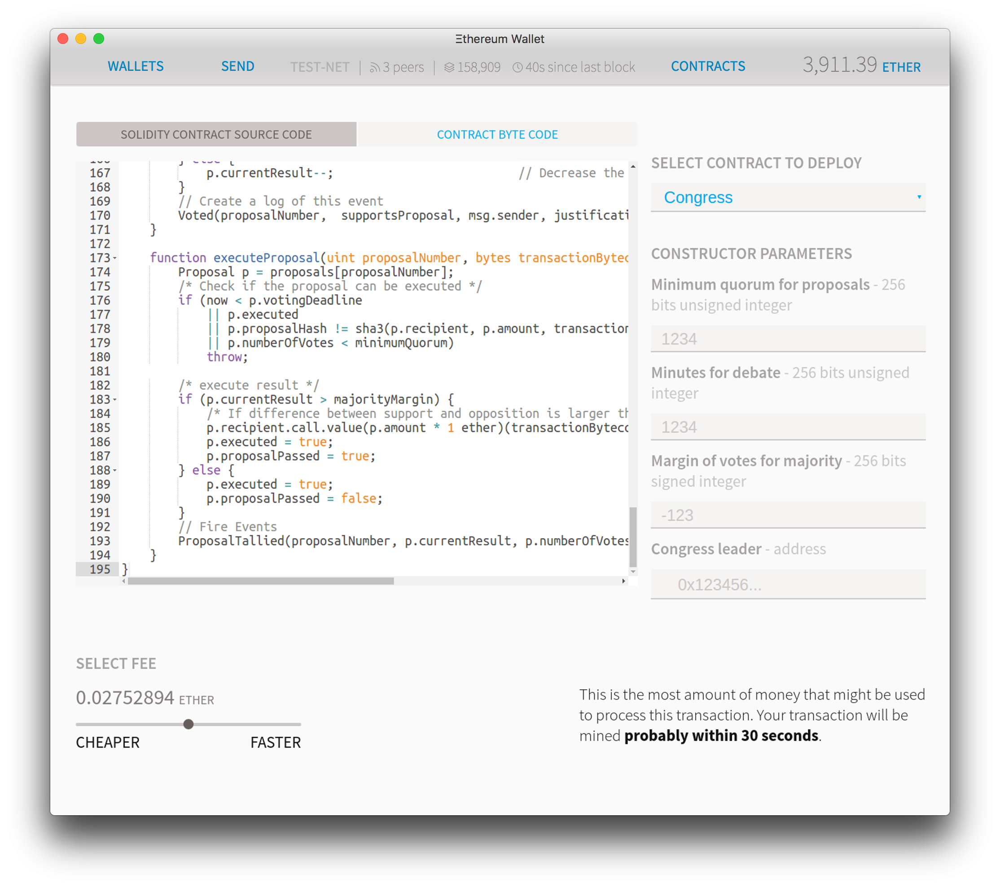
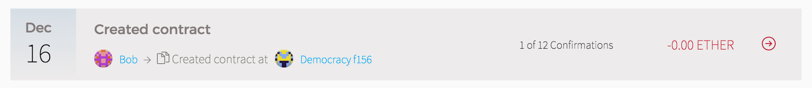
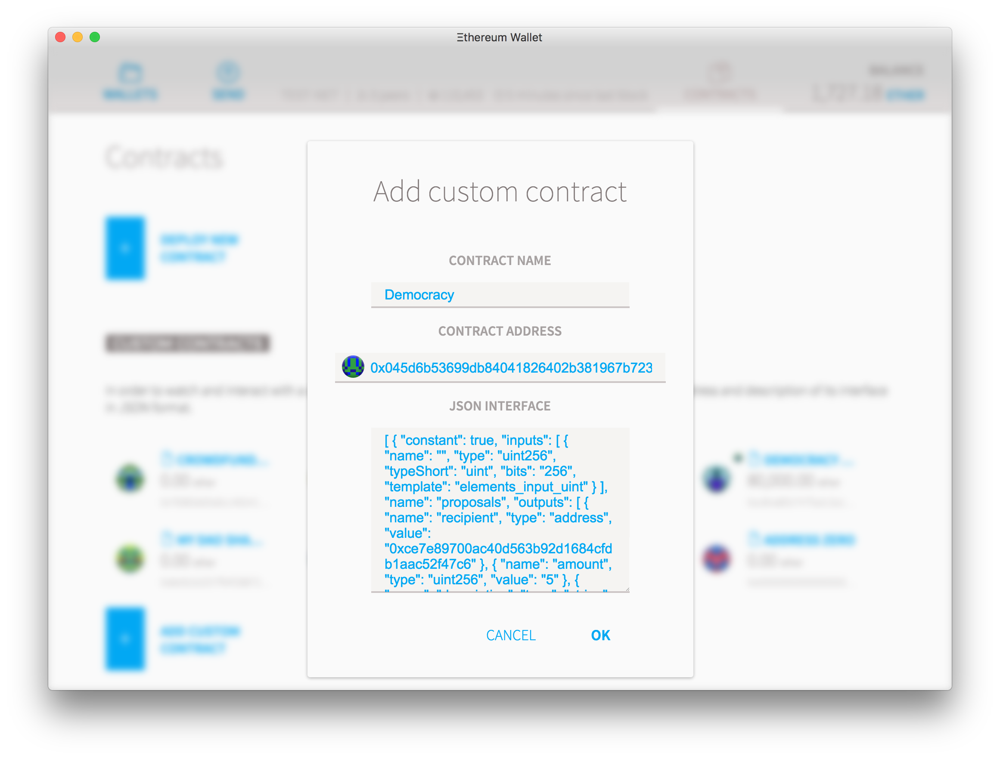
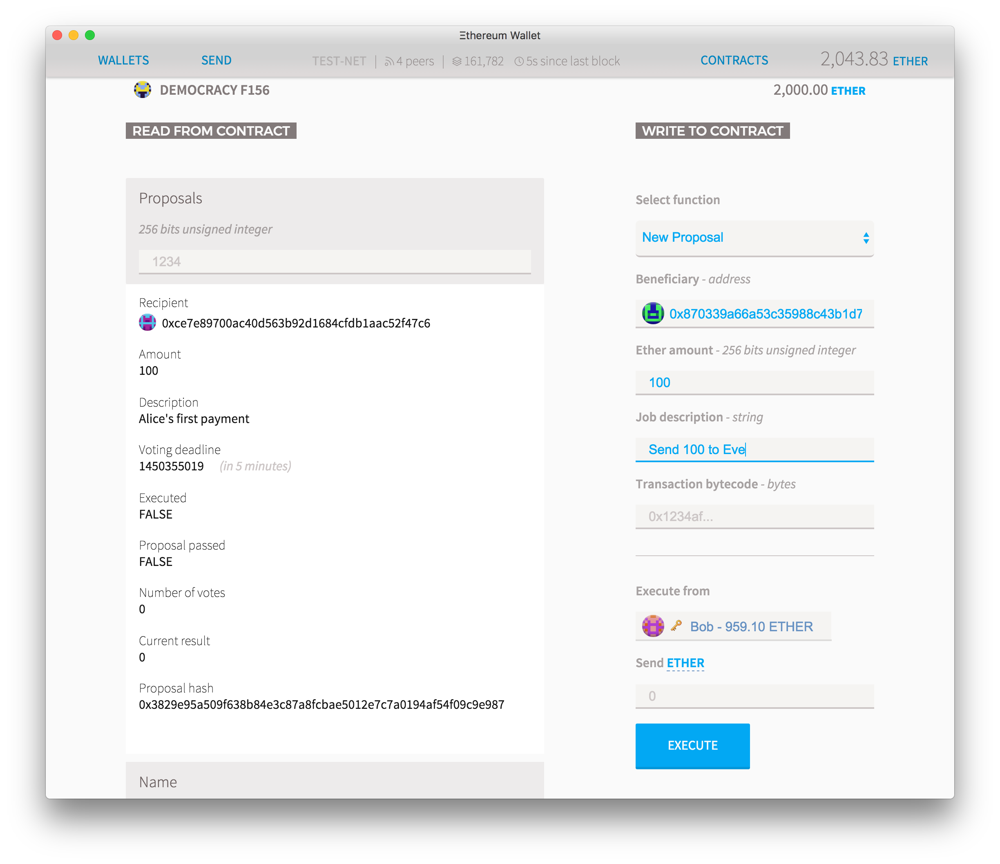
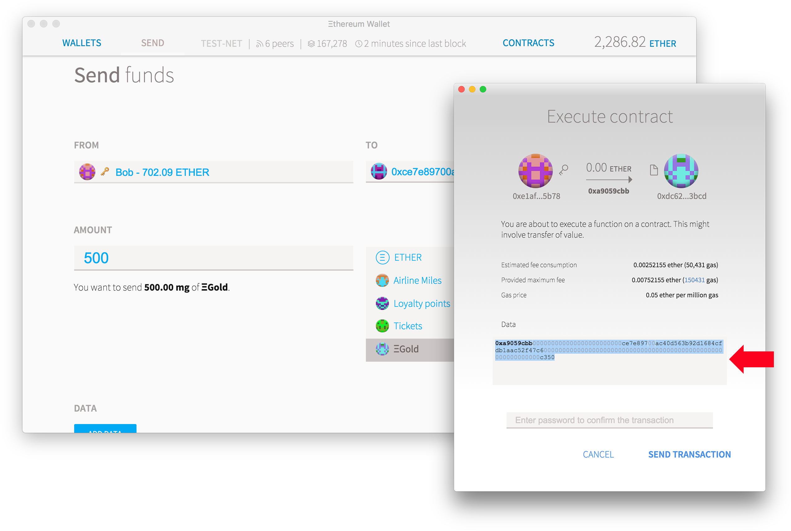
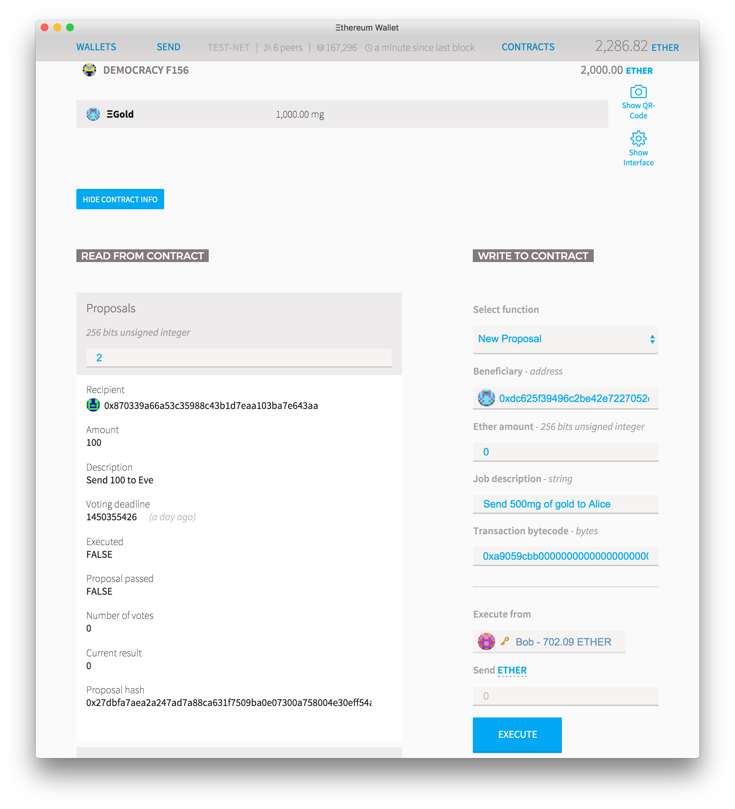
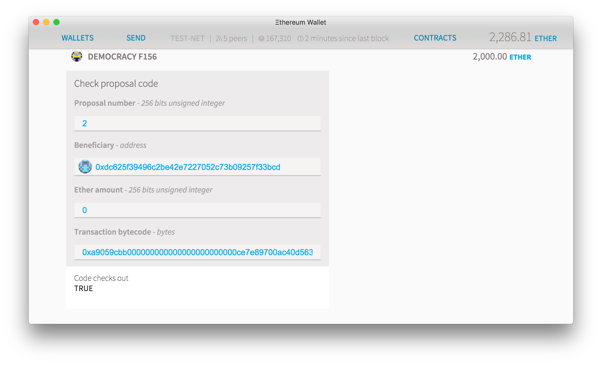
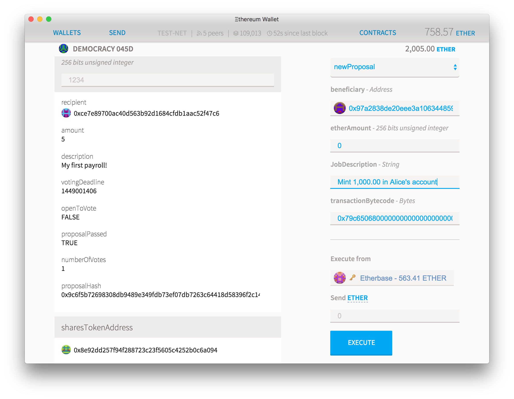

DAO
分散的自治组织¶
"分散的自治组织" - 理查德布朗
到目前为止，我们列出的所有合约都由其他可能由人类持有的账户拥有并执行。 但是，在以太坊生态系统中不存在对机器人或人类的歧视，合同可以创建任何其他帐户所能够执行的任意行为。 但是，在以太坊生态系统中不存在对机器人或人类的歧视，合同可以创建任何其他帐户所能够执行的任意行为。
在本节中，我们将建立一个分散和民主的组织，仅存在于区块链中，但它可以做任何简单账户都能做到的事情。 该组织有一个中央经理，负责决定谁是成员和投票规则，但正如我们将看到的，这也可以改变。
这个特定的民主的工作方式是它有一个所有者，其行为像一个管理者，首席执行官或总统。 所有者可以添加（或删除）有表决权的成员到组织中。 任何成员都可以提出一个提案，以Ethereum交易的形式发送以太或执行某个合同，其他成员可以投票支持或反对该提案。 一旦预定的时间和一定数量的成员投了票，建议就可以执行：
区块链大会¶
代码¶
!!!include(solidity/dao-congress.sol)!!!
如何部署¶
打开钱包（如果你只是测试，进入菜单开发>网络> testnet），进入合同选项卡，然后按部署合同，并在固体代码框,，粘贴上面的代码。 在合同选择器上，选择 Congress ，您将看到设置变量。
- 提案的最低法定人数是提案在执行之前需要拥有的最低投票数。
- 辩论分钟是在执行之前需要通过的最短时间（以分钟为单位）
- 多数投票的保证金如果有超过50％的选票加上保证金，则提案通过。简单多数为0，将其放在号会员 - 1 之间，以求达成绝对的一致意见。

您可以稍后更改这些参数。 作为开始，您可以选择5分钟的辩论时间，并将其余参数保留为0。 在页面上稍低一点，你会看到以乙醚部署你的合同的成本估计。 如果要保存，可以尝试降低价格，但这可能意味着必须等待更长的时间才能创建合同。 点击部署，输入您的密码并等待。
几秒钟后，您将被带到仪表板，向下滚动，您将可以看到正在创建的交易。 在不到一分钟的时间内，您将看到交易成功，并且创建了一个新的独特图标。 点击合同名称即可查看（您可以随时在合同选项卡上查看）。

与他人分享¶
如果您想与其他人分享您的DAO，那么他们需要合同地址和接口文件，这是一个小文本字符串，可以作为合同的指导手册。 点击复制地址获取前者和显示界面以显示后者。
在另一台计算机上，进入合同选项卡，然后单击手表合同。 添加正确的地址和界面，然后按 OK 。

与合同交互¶
在“从合同中读取”上，您可以看到您可以在合同上免费执行的所有功能，因为他们只是从区块链中读取信息。 在这里你可以看到，例如，合同的当前“所有者”（应该是上传的账户）
在“写入合同”中，您将列出所有将尝试执行一些将数据保存到区块链的计算的功能，因此将花费以太网费用。 选择“新建议”，它将显示该功能的所有选项。
选择“新建议”，它将显示该功能的所有选项。 在“选择功能”选取器上，选择“添加成员”。 添加你想成为会员的人的地址（删除一个会员，选择“删除会员”）。 在“执行”中，确保您拥有与所有者相同的帐户，因为这是只有主管理员才能执行的操作。 按执行并等待几秒钟，以便下一个块进行更改。
没有成员列表，但您可以通过将地址放在 Read from contract 列中的 Members 功能上来检查是否有成员。
另外，如果你希望合同有自己的任何资金，你需要存入一些以太（或其他标记），否则你会有一个非常无牙的组织。 在右上角按转移以太网和令牌。
添加一个简单的建议：发送ether¶
现在让我们将第一个提案添加到合同中。 在功能选取器上，选择 New Proposal 。
对于“受益人”，添加您想要发送以太的人的地址，并在标有“Wei Amount”的框中输入您想要发送的金额。,魏是乙醚的最小单位，等于10 ^ -18乙醚，必须始终以整数形式给出。 例如，如果要发送1个以太网，请输入1000000000000000000（即18个零）。 最后，添加一些描述你想要这样做的原因的文本。 现在将“交易字节码”留空。 点击执行并输入您的密码。 几秒钟后，numProposals将增加到1，并且第一个提议（编号为0）将出现在左侧列。 随着您添加更多提案，只需将提案编号放在“提案”字段中即可看到其中的任何提案，并且您可以阅读所有提案。
对提案进行投票也很简单。 在功能选择器上选择“投票”。 在第一个框中输入提案编号，如果您同意，请选中“是”框（或留空以投票反对）。 点击“执行”发送您的投票。

当投票时间结束后，您可以选择“executeProposal”。 如果提案仅仅是发送ether，那么您也可以将“ transactionBytecode ”字段留空。 按下“执行”之后，但在输入密码之前，请注意出现的屏幕。
如果在“估计费用消耗”字段中出现警告，则意味着由于某种原因，被调用的函数将不会执行并将突然终止。 这可能意味着很多事情，但在本合同的上下文中，无论何时您尝试在截止日期过去之前执行合同，或者用户尝试发送与原始提案不同的字节码数据，都会显示此警告。 出于安全原因，如果发生这些事情之一，合同执行将突然终止，试图进行非法交易的用户将失去所有为支付交易费而发送的乙醚。
如果交易被执行，那么在几秒钟之后，您应该能够看到结果：已执行将变为真，并且应从合约的余额中减去正确金额的乙醚并将其记入收件人地址。
添加复杂的提案：拥有另一个令牌¶
您可以使用这个民主在以太坊执行任何事务，只要您可以找出该事务生成的字节码即可。 幸运的是，我们可以使用钱包来做到这一点！
在这个例子中，我们将使用一个令牌来表明这个合约可以持有多于以太，并且可以在任何其他以太坊资产中进行交易。 首先，创建一个令牌属于您的一个普通账户。 在合同页面上，点击转账以太网和代币将其中的一些转移到新的会议合同中（为了简单起见，不要将超过一半的硬币发送给您的DAO）。 之后，我们将模拟您想要执行的操作。 因此，如果您想要建议DAO向某人发送500毫克金币作为付款，请按照您要执行的步骤从您拥有的帐户执行该交易，然后按“发送”，但当确认屏幕,弹出，不输入您的密码。

相反，点击“显示RAW数据”链接，并复制显示在“RAW数据”字段中的代码，并将其保存到文本文件或记事本中。 取消交易。 您还需要您要为该操作调用的合同地址，在这种情况下为令牌合同。 你可以在 Contracts 选项卡上找到它：保存在某个地方。
现在回到会议合同并使用这些参数创建一个新提案：
- 作为受益人，请放置令牌的地址（请注意，如果它是相同的图标）
- 离开以太量空白
- 在工作描述上，只写一个你想完成的小说明
- 在 Transaction Bytecode 上，粘贴上一步中从数据字段中保存的字节码

在几秒钟内，您应该能够看到提案的详细信息。 你会注意到事务字节码不会显示在那里，而只有一个“事务散列”。 与其他字段不同，字节码可能非常冗长，因此存储在区块链中的代价很高，因此，不是将其存档，而是稍后执行调用的人员将提供字节码。
但是，这当然会造成一个安全漏洞：在没有实际代码的情况下如何投票提案？,在提案被投票后，什么阻止了用户执行不同的代码？,这就是事务散列进来的地方。 在“从合同中读取”功能列表上滚动一下，你会看到一个提案检查功能，任何人都可以放置所有的功能参数，并检查它们是否与正在投票的人相匹配。 这也保证提议不会被执行，除非字节码的散列与提供的代码完全匹配。

任何人都可以非常容易地通过遵循相同的步骤来获取正确的字节码，然后将提案编号和其他参数添加到 Read from contract 底部的 Check proposal code 函数中，从而非常容易地检查提案。
剩下的投票过程保持不变：所有成员都可以投票，在截止日期之后，有人可以执行提案。 唯一的区别是，这次你必须提供你之前提交的相同的字节码。 请注意确认窗口中的任何警告：如果它表示不会执行您的代码，请检查截止日期是否已经过去，是否有足够票数，以及您的事务字节码是否已检出。
让它变得更好¶
以下是目前DAO的一些缺点，我们将其作为练习留给读者：
- 你能否将会员列表公开并编入索引？
- 你可以允许成员改变他们的投票（投票结束后，但在投票结束前）吗？
- 目前的投票信息只能在日志中看到，你可以制作一个显示所有投票的功能吗？
股东协会¶
在上一节中，我们创建了一个合同，这个合同的作用类似于仅限邀请的俱乐部，其成员受到总统的突发事件邀请或禁止。 但是这有一些缺点：如果有人想改变他的主要地址呢？,如果一些成员比其他成员拥有更多权重呢？,如果您真的想要在公开市场上交易或出售会员资格或股票，该怎么办？,如果你想要你的组织作为一个持续的股东决策机构来工作呢？
我们将修改一下我们的合同，将它连接到一个特定的令牌，它将作为合同的持有份额。 首先，我们需要创建此令牌：转至令牌教程，并创建一个简单的令牌，其中初始提供为100，小数为0，百分比符号（％）为 ,符号。 如果您希望能够以百分之几的百分比进行交易，那么将供应量增加100倍或1000倍，然后将相应数量的零作为小数**添加。 部署此合同并将其地址保存在文本文件中。
现在给股东代码：
!!!include(solidity/dao-association.sol)!!!
部署和使用¶
代码部署与前面的代码几乎完全一样，但您还需要放置一个共享令牌地址，该地址是可用作具有投票权份额的令牌地址。
注意这些代码行：首先我们描述令牌合同到我们的新合同。 由于它只使用 balanceOf 函数，因此我们只需添加该单行。
contract Token { mapping (address => uint256) public balanceOf; }
然后我们定义一个 type 标记的变量，这意味着它将继承我们之前描述的所有函数。 最后，我们将令牌变量指向区块链上的地址，以便它可以使用该地址并请求实时信息。 这是让一个合约在ethereum中理解另一个的最简单方法。
contract Association { token public sharesTokenAddress; // ... function Association(token sharesAddress, uint minimumSharesForVoting, uint minutesForDebate) { sharesTokenAddress = token(sharesAddress);
这个协会提出了前一届大会没有的挑战：因为任何有代币的人都可以投票，余额可以很快改变，所以当股东投票时，提案的实际得分不能被计算在内，否则有人能够,只需将他的份额发送到不同的地址，多次投票。 所以在这份合同中只记录了投票的位置，然后在执行提案阶段中计算真实得分。
uint quorum = 0;
uint yea = 0;
uint nay = 0;
for (uint i = 0; i < p.votes.length; ++i) {
Vote v = p.votes[i];
uint voteWeight = sharesTokenAddress.balanceOf(v.voter);
quorum += voteWeight;
if (v.inSupport) {
yea += voteWeight;
} else {
nay += voteWeight;
}
}
计算加权投票的另一种方法是创建一个单独的有符号整数来保留投票分数，并在最后检查它是正面还是负面，但是您必须将无符号整数 voteWeight转换为 signed,整数使用 int score = int（voteWeight）;
使用这个DAO就像以前一样：成员创建新的提案，对他们投票，等到截止日期过去，然后任何人都可以计票并执行它。

但是，我怎样才能限制业主的权力呢？¶
在这个合同中，作为所有者的地址具有一些特殊权力：他们可以随意添加或禁止成员，更改获胜所需的保证金，更改辩论所需的时间以及投票通过所需的法定人数。 但是，这可以通过使用拥有者的另一种力量来解决：改变所有权。
所有者可以通过将新所有者指定为 0x00000 ... 来将所有权更改为任何人。 这将保证规则永远不会改变，但这是一个不可逆转的行动。 所有者也可以将所有权更改为合同本身：只需点击“复制地址”并将其添加到“新建” 这将使所有者的所有权力可以通过创建提案来执行。
如果你愿意，你也可以设定一个合同作为另一个合同的所有者：假设你想要一个公司结构，你希望总统有权委任董事会成员，然后可以发行更多的股票，最后这些股票投票,如何花费预算。 您可以创建一个 Association 合同，该合同使用由会议拥有的 mintable token **，最终由一个帐户拥有
但是如果你想要不同的投票规则呢？,也许要改变投票规则，你需要80％的共识，或者成员可能不同。 在这种情况下，您可以创建另一个相同的DAO或使用其他一些源代码，并将其作为第一个DAO的所有者
液体民主¶
对合同的所有费用和行动进行投票需要时间，并且要求用户不断地积极，知情和专注。 另一个有趣的方法是选择一个指定的账户来控制合同，然后能够迅速做出决定。
我们将实施一个通常称为 Liquid Democracy 的版本，这是一个更灵活的代表民主。 在这种民主制度下，任何选民都可以成为潜在的代表：不要投票给你想要的候选人，你只需说出你信任哪个选民为你处理这个决定。 你的投票权重被委托给他们，他们又可以将其委托给他们信任的另一位选民等等。 最终的结果应该是，投票数最多的账户是最有信任的账户
代码¶
!!!include(solidity/dao-liquid-democracy.sol)!!!
部署¶
首先，你需要一个令牌。 如果您遵循上述股东协会教程，您可以使用与以前相同的标记，否则只需部署新标记并在一些帐户之间分发。 复制令牌地址。
部署民主契约，并将标记地址放在投票权重标记上，将 75 作为每轮丢失百分比和 transferOwnership（地址）（没有任何空格,或多余的字符！）作为禁止功能。
选择一个委托¶
现在部署Liquid民主并进入其页面。 首先让任何股东投票选出他们将代表本合同作出决定的人。 如果您想成为最终决策者，您可以对自己投票，如果您不想代表您担任这个角色，您可以在零地址投票。
在有足够的人投票后，您可以执行功能计算投票，以便计算每个人的投票权重。 这个功能需要多次运行，所以第一次运行它会将每个人的体重设置为他们在所选令牌中的平衡，在下一轮中投票权重将发送给您所投票委任的人，接下来将转到,由您选择的人投票的人等等。 为了防止投票代表团的无限循环，每当投票转发时，它就会失去一点权力，在 percentLossInEachRound 的合同启动时设置。 因此，如果损失设置为75％，这意味着您投票的人获得了100％的体重，但如果他们将投票委托给其他人，则只有75％的体重被转发。 该人可以委托给其他人，但他们只会得到56％的投票权，等等。 如果比率低于100％，则重新计算投票代表团不会再改变结果的时间会有限，但如果它是100％，则意味着投票权重将围绕任何可能的循环流通。
如果自本轮呼叫以来已超过一个半小时半计算投票**已经开始，所有权重将重置并将根据原始令牌余额重新计算，因此如果您最近收到了更多令牌，则应该,再次执行此功能。
众议院¶
这个表决代表团有什么用处？,例如，你可以使用它来代替 Association 上的标记权重。 首先，获取[股东协会]的代码3，但替换它描述令牌的第一行：
contract Token {
mapping (address => uint256) public balanceOf;
function transferFrom(address _from, address _to, uint256 _value) returns (bool success);
}
进入这个：
contract Token {
mapping (address => uint256) public voteWeight;
uint public numberOfDelegationRounds;
function balanceOf(address member) constant returns (uint256 balance) {
if (numberOfDelegationRounds < 3)
return 0;
else
return this.voteWeight(member);
}
function transferFrom(address _from, address _to, uint256 _value) returns (bool success);
}
当你写合同时，你可以描述主合同使用的多个其他合同。 有些可能是已经在目标合同上定义的函数和变量，如 voteWeight 和 numberOfDelegationRounds 。 但请注意， balanceOf 是一项新功能，既不存在于Liquid Democracy或Association合同中，现在我们正在定义它，作为将返回 voteWeight 的函数，如果至少有三个,已经计算了几轮代表团。
使用液体民主作为令牌地址而不是原始令牌，并像往常一样继续部署股东协会。 就像以前一样，用户可以针对这些问题创建新的提案或投票，但现在，而不是使用令牌余额作为我们使用委托流程的投票权。 所以，如果你是一个令牌持有者，而不是不断地告诉你所有的问题，你可以选择你信任的人并指定他们，然后他们可以选择他们信任的人：结果是你的代表，而不是,被限制在一个给定的任意地理位置，将会是你的社交接近中的某个人。
此外，它意味着您可以随时切换您的投票：如果您的代表在某些问题上投票反对您的兴趣，则可以在提案投票结束前更换您的受托人，或者选择代表您自己解决问题并投射,你自己的投票。
行政部门¶
代表民主国家是选择代表的一种很好的方式，但对于一些重要或较简单的决定，对个别提案的投票可能太慢。这就是为什么大多数民主政府都有一个行政部门，被委任人有权代表国家。
经过四轮代表团之后，更重的地址将被定为被任命人。 如果有很多代表投票，那么可能需要再进行几轮计算投票才能在最终指定的地址进行结算。
被任命者是可以调用 Execute 函数的唯一地址，它将能够执行（几乎）任何代表民主的函数。 如果液体民主合同中存有任何以太或令牌，被任命者将被允许在任何地方移动。
如果您已经按照我们的示例创建了股东协会，并以此流动民主为标志，那么您应该能够以有趣的方式使用行政部门：转到主协会地址并执行转账,所有权对液体民主起作用。
一旦该传输完成，将该功能切换到更改投票规则。 这允许您更改一些基本投票规则，例如投票通过所需的最低法定人数或新提案需要留在场内的时间。 尝试更改这些设置，然后单击执行：当确认窗口弹出时，它会告诉您事务无法执行。 这当然会发生，因为只有设置为 Owner 的地址才能更改这些设置，合同将拒绝此交易尝试。 所以而不是输入密码将代码复制到 data 字段并将其保存到文本文件中。 点击取消，滚动到顶部并点击复制地址，并将其保存到文本文件中。
现在进入液体民主页面并选择执行。 在目标上放置关联合同的地址，将数量保留为0并将之前复制的代码粘贴到字节代码数据字段中。 请确保您从作为任命人的帐户中执行它并单击执行。
一旦交易完成后，Liquid民主会将命令传递给协会，新的投票规则可能适用。 被任命人有绝对的权力去做 Liquid民主合同可以执行的任何事情。 您可以使用相同的技术来创建代表民主所拥有的Mintable Token，然后允许被任命人创建令牌或冻结帐户。
为了防止权力滥用，您可以设置一个被禁止者无法做到的禁止功能。 如果你遵循我们的例子，禁止功能是 transferOwnership（地址），以防止被任命者将协会的所有权转让给他们自己（在政治上，当总统使用他的行政权力向他们自己转让某些使用过的东西,属于总统，这是一场政变或盗用）。
Time-Locked Multisig¶
有时候，时间也可以被用作一个很好的安全机制。 以下代码基于DAO大会，但有不同的转折。 而不是每个需要X个成员批准的行动，相反，任何交易都可以由单个成员发起，但他们都需要最小的延迟时间才能被执行，这取决于交易的支持,。 提案越多，越早执行。 会员可以对交易进行投票，这意味着它将取消其他批准的签名之一。
这意味着如果您没有紧急情况，可能只需一个或两个签名即可执行任何交易。 但是，如果单个密钥泄露，其他密钥可能会延迟该交易数月或数年，甚至阻止其执行。
怎么运行的¶
一个已经被所有密钥批准的交易可以在十分钟后被执行（这个数额是可配置的），并且每5％的成员没有投票时它所需要的时间增加一倍（如果他们积极投票，则每增加一倍,反对）。 如果这是一个简单的以太事务处理，只要支持表决将它放在所需的时间内，就会立即执行事务处理，但是更复杂的事务处理需要用正确的字节码手动执行。 这些是默认值，但创建合同时可以设置不同的值：
批准交易的成员数量：大致的时间延迟
| 量 | 延迟 |
|---|---|
| 100% approval: | 10 minutes (minimum default) |
| 90% approval: | 40 minutes |
| 80%: | 2hr 40min |
| 50%: | about a week |
| 40%: | 1 month |
| 30%: | 4 months |
| 20%: | Over a year |
| 10% or less: | 5 years or never |
一旦最少时间过去了，任何人都可以执行交易（参见“国会”以获得更完整的步行）。 这是故意的，因为它允许某人安排交易或聘请其他人执行它。
代码¶
!!!include(solidity/dao-time-lock-multisig.sol)!!!
部署和使用¶
像这些教程中所做的那样部署该代码。 在部署参数上，如果希望更快的锁定时间，则将最小时间留空将默认为30分钟，然后放置1分钟。 上传后，执行“添加成员”功能添加新组成员，他们可以是其他成员
设置为“所有者”的帐户非常强大，因为它可以随意添加或删除成员。 因此，在添加主要成员之后，我们建议您通过执行 Transfer Membership 功能将“所有者”设置为另一个帐户。 如果您希望将所有成员的增加或删除投票，就像其他任何交易一样，将其设置为多重投票。 另一种方法是将其设置为另一个可信的多重金额钱包，或者如果您希望永久修复成员数量，则可以设置为 0x000 。 请记住，这份合同的资金只与“所有者”账户一样安全。
与上述任何DAO一样，该合同可以持有醚，任何以太坊代币并执行任何合约。 为此，请在DAO会议上检查如何执行复杂的提议。
注意事项和改进¶
为了简单起见，反对提案的投票仅仅被视为少一票支持。 如果你愿意的话，你可以玩弄负面票数有更多权重的想法，但这意味着少数成员可以对任何拟议交易拥有有效的否决权。
你还能改善这份合同吗？
我们去探索吧！¶
你已经到了本教程的最后，但这只是一次伟大冒险的开始。 回顾一下，看看你有多成就：你创造了一个活着的，说话的机器人，你自己的加密货币，通过无信任的众筹筹集资金，并用它来启动你自己的私人民主组织。
接下来会发生什么？¶
-
您仍然控制的代币可以在分散的交易所上出售，或者交易商品和服务，为第一份合同的进一步发展提供资金并发展组织。
-
您的DAO可以在名称注册商处拥有自己的名称，然后更改其重定向的位置，以便在令牌持有者批准后自行更新。
-
该组织不仅可以持有醚，也可以持有以太坊创建的任何其他类型的硬币，包括价值与比特币或美元挂钩的资产。
-
DAO可以被编程为允许多个交易的提案，一些计划在未来。它也可以拥有其他DAO的份额，这意味着它可以投票给更大的组织或成为DAO联盟的一部分。
-
令牌合同可以重新编程以保持以太币或持有其他代币并将其分发给代币持有者。这将把令牌的价值与其他资产的价值联系起来，因此只需将资金转移到令牌地址即可完成支付股息。
这一切都意味着你创建的这个小社会可以发展壮大，从第三方获得资金，支付经常性工资，拥有任何类型的加密资产，甚至使用众包为其活动提供资金。 所有这些都具有完全的透明度，完整的问责制和完全免于任何人为干扰。 虽然网络生活的合同将执行完全创建的代码执行，没有任何例外，永远。
那么你的合同会是什么？,它会成为一个国家，一个公司还是一个非营利组织？,你的代码会做什么？
这取决于你。